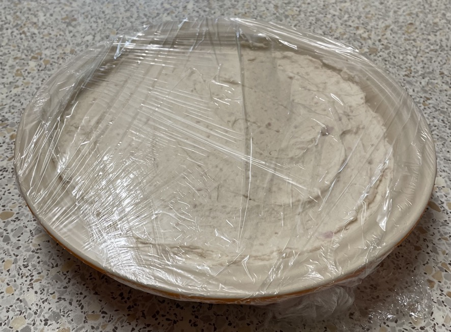

White chocolate cheesecake
Base
- Break into bits then blitz till almost all crumbs
- Add add blitz again
- 50g unsalted butter softened
- Press into 20cm circular baking dish with wooden spoon then flatten with one hand
- Cool in fridge
Filling
- Melt in bowl over saucepan of boiled water over low heat
- Cool for 10 mins (make base)
- Beat in bowl with wooden spoon till soft
- 300g full-fat cream cheese at room temperature
- 1 tsp lemon juice
- 1 tsp vanilla extract
- Gently fold in melted chocolate
- Whip but stop before peaks soft peaks
- Fold cream into cheese mixture in two batches
- Scrape mixture onto base
- Tidy by going around edge with finger wrapped in kitchen roll
- Cover with cling film
- Refridgerate overnight
Serving
- Calories = 4100, 1/10 = 410
- 10 portions
⅔ amounts
- In 20cm round baking tin
- 115g biscuits
- 33g butter
- 133g white chocolate
- 200g cheese
- 196g double cream
- 3.33g vanilla extract
- 3.33g lemon juice
Notes
- Can flavour with liqueur / spirit / flavoured white chocolate
- Original recipe
- Made: Oct 2022, Sep 2023
Pics
